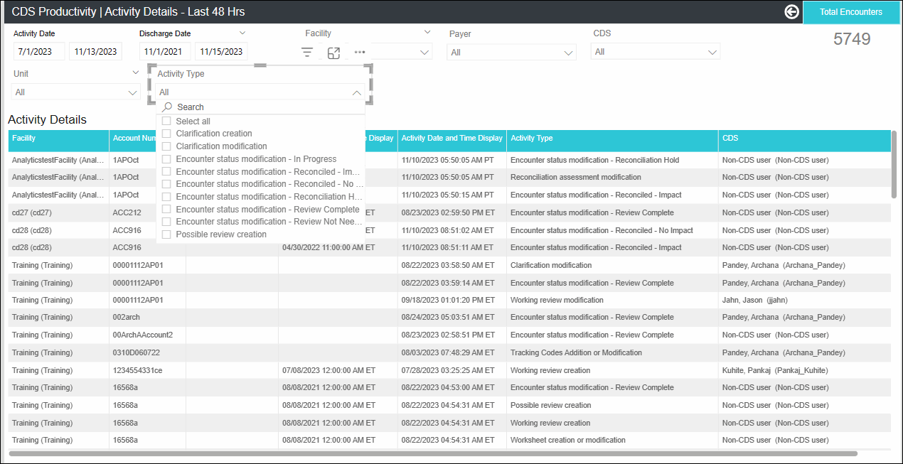

Activity Details - Last 48 Hours
- For example, when you open the report on 9/12/2021 at 4 PM EST, the report displays the activities performed in the last 48 hours - 9/10/2021 4PM - 9/12/2021 4PM.
- No date slicer is displayed and you cannot modify the date range
- A CDS Manager can concurrently view and analyze the details around the activities performed by the CDSs.
- A CDS can view and analyze their productivity concurrently.
- How soon after admission the initial review was performed?
- What is the average TAT of initial reviews?
- What is the detail around the reviews?
- How many total reviews were performed?
Navigation: On the Analytics home page left side panel, navigate to .
- KPI cards: Initial Reviews, Additional Reviews, Total Reviews, Avg. Initial Review TAT (Hours)
- Activity Details Tabular Chart
On the top panel, you can select desired values for the slicers (refer Report slicers) and the corresponding data gets filtered in charts.
For filters on all pages, refer Filters on all Pages.
For Footnotes, refer Footnotes.
Info Icon(Text on hover): Displays the activity performed by the CDS in the last 48 hours.
Activity Details

Activity Details - KPI Cards

| KPI Card | Description |
|---|---|
| Initial Reviews |
This metric displays the count of encounters with an initial review date/time in the last 48 hours. Example: For last 48 hours Activity date, this metric
displays the total count of initial reviews done by the CDS.
Note:
|
| Additional Reviews |
This KPI metric displays the count of encounters with an initial
review date/time in the last 48 hours. Example: For last
48 hours Activity date, this metric displays the total count of
additional reviews done by the CDS.
Note:
|
| Average Initial Review TAT (Hours) | This metric displays 'Avg. Initial Review TAT (Hours)' for the
last 48 hours. The number of hours between encounter Admit Date/time and the date/time the Working Review was first created. (Initial Review TAT (hours) for an encounter = Initial Review Date/Time- Admit Date/Time) hours. Formula: Avg. Initial Review TAT(Hours) = Sum of Initial Review TAT(Hours) of all the reviewed encounters / Encounters Reviewed (Initial Reviews). Note: Encounters with "Review Not Needed" encounter
status are excluded from this metric
calculations. Format: 150 |
Activity Detail - CDS Activity Detail Tabular Chart
| Column | Description | Formula/Calculation |
|---|---|---|
| Activity CDS | Displays the name of the CDS who performed the activity in the selected Activity Date Range. Format: CDS Name (CDS ID). | |
| Facility | Displays facility assigned to the encounter. Format: Facility Description. | |
| Account No | Displays the Account Number assigned to the encounter. | |
| MRN | Displays the MRN assigned to the encounter. | |
| Patient Name | Displays the name of the patient associated with the encounter. Patient name is displayed in the format: Last Name, First Name. | |
| Admit Date | Displays the Admission Date and Time assigned to the encounter in the facility's timezone. Format: 08/08/2019 12:00:00 AM MST. | |
| Discharge Date |
Displays the Discharge Date and Time assigned to the encounter in the facility's timezone. Format: 08/08/2019 12:00:00 AM MST. This column is blank for the encounters that do not have a discharge date assigned. |
|
| LOS | Displays the Length of Stay of the patient. Note: Same logic as
Encounter Details - YES. |
|
| Activity Date |
Displays the Activity Date considering facility's timezone. Format : 08/08/2019 (MM/DD/YYYY). Data in the report is sorted by the Activity Date in descending order. Note:
Time component is not displayed with the date as there can be
multiple activities on the same encounter on the same day. |
|
| Activity Type | Displays the name of the activity(s) performed by the Activity CDS.
Format: Comma Separated
Note: Activity Type- Post Discharge Review - is not applicable for
this report. Multiple activities performed on the same day are displayed in the comma-separated format. |
|
| Initial Review Date |
Displays the date and time when the initial review was performed on the encounter. Example: 05/24/2020 10:10:00 AM ET The date must be in the Facility's time-zone. This column is blank for the encounters that do not have an initial review date. If the Initial Review Date/time is after the Discharge Date/Time, Initial Review Date/Time is displayed in the red font. |
|
| Initial Review CDS | Displays the name of the CDS who performed the initial
review. Format: Last Name, First Name MI (CDS ID). This column is blank for the encounters that do not have a ‘Initial Review Date/Time'. |
|
| Initial Review TAT (Hours) |
Displays the Initial Review TAT (Hours) for the selected period. |
Initial Review TAT (hours) for an encounter = Initial Review Date/Time - Admit Date/Time (hours). |
| Encounter CDS | Displays the name of the CDS assigned to the encounter. Format: CDS Name (CDS ID). | |
| Encounter Status | Displays the Encounter Status assigned to the encounter. Encounters with the Status 'Review Not Needed' are not displayed by default. You can select 'Review Not Needed' options from the 'Encounter Status' filter to analyze the Review Not Needed encounters. |
|
| Rank at Initial Review | Displays the rank assigned to the encounter prior to the Initial Review. Example 1, 2, etc. This column is blank for the encounters that do not have a ‘Rank at Initial Review' assigned. | |
| Current Rank | Displays the current rank assigned to the encounter. Example 1, 2, etc. This column is blank for the encounters that do not have a Current Rank assigned. | |
| W-DRG | Displays the 'primary' Working DRG along with the description
displayed on the Review page. Note: This column is blank for the
encounters that do not have a ‘Initial Review
Date/Time' |
|
| W-DRG WT | This column displays the WT associated with the 'primary' Working DRG displayed on the Review page. Example: 1.0393. | |
| P-DRG | Displays the 'primary' Possible DRG along with the description
displayed on the Review page. Note:
This column is blank for the encounters that do not have a
‘Initial Review Date/Time' and if there is no Possible DRG
assigned to the encounter. |
|
| P-DRG WT | Displays the WT associated with the 'primary' Possible DRG displayed
on the Review page. Example: 1.0393. Note: This column is blank
for the encounters that do not have a ‘Initial Review Date/Time' and
if there is no Possible DRG assigned to the
encounter. |
|
| R-DRG | Displays both code and description of the Reconciliation Assessment
DRG along with the description displayed on the Reconciliation
page. Note: Example: 872 - SEPTICEMIA OR SEVERE SEPSIS
WITHOUT MV >96 HOURS WITHOUT MAJOR COMPLICATION OR COMORBIDITY
(MCC). |
|
| R-DRG WT |
This column displays the WT associated with the Reconciliation Assessment DRG displayed on the Reconciliation page. Example: 1.0393 |
|
| F-DRG | Displays both code and description of the Final Coded DRG along with
the description displayed on the Reconciliation page. Example:
872 - SEPTICEMIA OR SEVERE SEPSIS WITHOUT MV >96 HOURS WITHOUT MAJOR
COMPLICATION OR COMORBIDITY (MCC). Note: This column is blank for the
encounters that do not have a ‘Initial Review
Date/Time'. |
|
| F-DRG WT |
This column displays the WT associated with the Final Coded DRG displayed on the Reconciliation page. Example: 1.0393 This column is blank for the encounters that do not have a ‘Initial Review Date/Time'. |
|
| Payer | Displays the Payer assigned to the encounter in the format Payer Description (Payer ID). | |
| Unit | Displays the Unit assigned to the encounter. | |
| Patient Type | Displays the Patient Type assigned to the encounter. | |
| Visit Type | Displays the Visit Type assigned to the encounter. |
| Filter | Description |
|---|---|
| Facility | Displays both active and inactive facilities in alphabetical order
that the report user has access to.
|
| Payer | Displays both active and inactive payers in alphabetical order
associated with the facilities user has access to.
|
| Unit |
|
| CDS |
|
| Filter | Description |
|---|---|
| Patient Type |
|
| Visit Type |
|
| Encounter Status |
|
| Admit Service |
|
| Label | Text on hover |
|---|---|
| Avg. Initial Review TAT (Hours) | Avg. Initial Review TAT(Hours) = Sum of Initial Review TAT(Hours) of
all the reviewed encounters / Encounters Reviewed (Initial
Reviews. Initial Review TAT (hours) for an encounter = Initial Review Date/Time- Admit Date/Time) hours. For example, 28 |
| Initial Review Date | Displays Initial Review Date/time in red font when the Initial Review Date/Time > Discharge Date/Time. |
| Rank at Initial Review | Displays rank assigned to the encounter prior to Initial Review. |